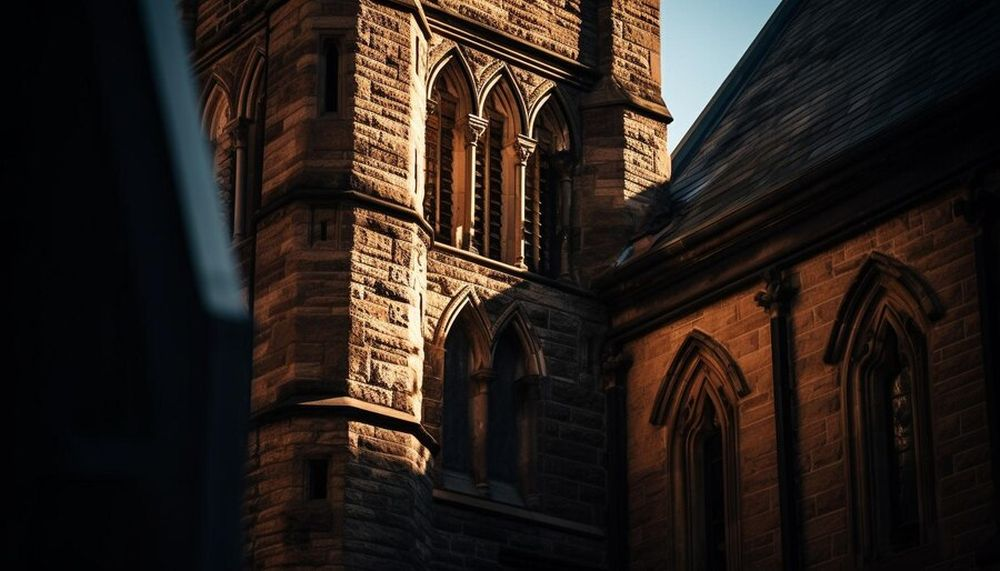

Descoperă Genova - O incursiune în istoria și cultura portului italian
Genova este un oraș maritim deosebit de important în Italia, cunoscut pentru patrimoniul său istoric și arhitectural:
-

Portul Vechi - Inimă maritimă
O zonă istorică animată cu darsene, restaurante și obiective turistice.
-

Acvariul - Lumea maritimă
Unul dintre cele mai mari acvarii din Europa, găzduind numeroase specii marine.
-

Palazzi dei Rolli - Patrimoniu UNESCO
O serie de palate magnifice, o fereastră în trecutul aristocratic al orașului.
-

Catedrala San Lorenzo - Arhitectură religioasă
O catedrală impunătoare cu influențe gotice și baroce, adăpostind relicve importante.
-

Mâncăruri de stradă - Delicii locale
Genova este cunoscută pentru specialități precum pesto și focaccia.
Concluzii
Genova te îmbie cu bogatul său patrimoniu maritim și cultural, oferind o privire în lumea porturilor italiene.